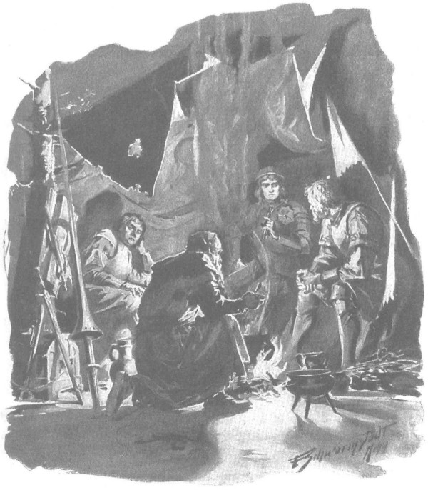

Gia nhân lập tức cởi trói cho gã, nhưng tay chân đã bị tê mỏi rã rời nên gã ngã sụp xuống đất, và khi được nâng dậy, gã còn ngất vài lần nữa, vì trước đó đã bị đánh đập tàn tệ. Theo lệnh Zbyszko, người ta mang gã đến gần đống lửa, cho ăn uống, xát mỡ lợn rồi ủ ấm bằng một tấm da thú, nhưng Sanderus vẫn chưa thể tỉnh lại, gã chìm vào một giấc ngủ say như chết, mãi tận chiều hôm sau chàng trai Séc mới có thể đánh thức gã.
Lòng sốt ruột như lửa cháy, Zbyszko đến gặp gã ngay lập tức. Nhưng thoạt đầu, chàng không thể hỏi được gã điều gì, bởi hoặc quá hoảng loạn sau những điều kinh khủng phải trải qua, hoặc vì sự bải hoải thường chế ngự những linh hồn yếu ớt sau khi mối nguy hiểm qua đi, gã Sanderus khóc nức nở không thể kìm được, cố mấy cũng không sao trả lời những câu hỏi mà chàng đặt ra. Gã nức nở nghẹn cả cổ họng, đôi môi run rẩy, và nước mắt cứ tuôn trào từ đôi mắt, như thể cả mạng sống của gã cũng tuôn chảy theo.
Rốt cuộc, bình tĩnh lại đôi chút và được lại sức bởi món sữa ngựa mà người Litva đã học được từ dân Tatar để bồi bổ sức khỏe, gã bắt đầu than thở rằng lũ “con cháu của Belial” đã dùng mũi giáo nhọn xiên gã như một quả táo nát, cướp mất con ngựa đang chở các thứ thánh tích có sức mạnh phi thường và đắt giá của gã; cuối cùng, khi bị trói vào gốc cây, bị lũ kiến kéo nhau cắn chân và toàn thân, gã đinh ninh là mình chắc chắn chết, nếu không phải hôm nay thì ngày mai.
Rốt cuộc Zbyszko nổi giận, đứng phắt dậy và bảo:
- Trả lời ngay, đồ hành khất, đúng vào những gì ta hỏi, coi chừng kẻo ngươi lại gặp những chuyện tệ hơn ấy!
- Có ổ kiến lửa đỏ không xa đây. - Chàng Séc cất lời. - Thưa cậu chủ, cứ ra lệnh mang hắn ta đặt lên đó, thì chẳng mấy chốc hắn sẽ tìm thấy lưỡi của hắn thôi mà.
Hlava nói đùa, thậm chí còn mỉm cười, vì chàng vẫn dành cho Sanderus lòng khoan dung, nhưng gã đã hoảng sợ và bắt đầu gào lên:
- Lạy các đấng nhân từ! Lạy các đấng nhân từ! Xin hãy cho tôi thêm một chút xíu thứ đồ uống ngoại đạo kia, rồi tôi sẽ nói tất cả những gì đã thấy và cả những gì tôi không thấy!
- Nếu chỉ một lời bịa đặt, ta sẽ đóng nêm vào giữa hàm răng của ngươi đấy! - Chàng Séc đe.
Song chàng lại đưa túi da đựng sữa ngựa đến gần miệng gã, gã vội vồ ngay, ôm chặt lấy, đôi môi thèm thuồng mút chặt vào miệng túi như một đứa trẻ ngậm vào vú mẹ và bắt đầu nuốt ừng ực, mắt hết mở ra lại nhắm tịt vào. Sau khi đã nút đến gần hai lít [218] hoặc hơn, gã mới rùng mình, đặt túi da trên đùi và nói, như thể rốt cuộc phải đành chịu thua:
- Tởm quá!…
Rồi gã nói với Zbyszko:
- Nào, bây giờ xin hãy hỏi đi, cứu tinh của tôi!
- Vợ ta có trong đám quân mà ngươi tham gia hay không?
Sanderus thoáng vẻ ngạc nhiên. Mặc dù gã đã nghe Danusia là vợ của Zbyszko, nhưng vì đám cưới diễn ra bí mật và ngay sau đó nàng bị bắt cóc, vì vậy gã thường nghĩ rằng nàng là con gái của ông Jurand [219] . Tuy nhiên, gã vội trả lời:
- Có, thưa ngài, có cô ấy! Nhưng lão Zygfryd de Lӧwe và Arnold von Baden đã mang theo cô gái trốn thoát khỏi đội ngũ rồi.
- Ngươi đã trông thấy nàng chưa? - Chàng trai trẻ hỏi với trái tim dập dồn.
- Tôi không thấy tận mặt cô ấy, thưa ngài, nhưng tôi đã nhìn thấy giữa hai con ngựa có một cái nôi bằng đây bện, hoàn toàn kín, trong đó họ chở theo một người, mà người canh giữ là con thằn lằn cái, chính con mụ đầy tớ của Giáo đoàn đã từ chỗ tên Danveld đến lâm cung. Và tôi cũng nghe thấy tiếng hát rất ai oán vẳng ra từ chiếc nôi ấy…
Zbyszko tái nhợt vì xúc động, chàng ngồi xuống một gốc cây và hồi lâu không biết hỏi gì thêm. Ông Maćko cùng chàng Séc cũng vô cùng xúc động khi nghe cái tin tức quan trọng và lớn lao ấy. Chàng Séc có thể cũng chợt nghĩ về cô chủ yêu quý của mình đang ở trang Spychow, mà với cô chủ thì cái tin này cũng đồng nghĩa với một bản án đầy đau khổ.
Một khoảnh khắc im lặng bao trùm.
Cuối cùng, ông Maćko ranh mãnh, người chưa từng biết Sanderus, mới chỉ nghe đôi điều gì đó về gã trước đấy, chợt nhìn gã vẻ nghi ngờ và hỏi:
- Mày là thằng nào? Mày đang làm trò gì trong bọn Thánh chiến?
- Con là ai, thưa ngài hiệp sĩ dũng mãnh, - kẻ lang thang đáp, - thì hãy để cho chính quận công can trường đây, - gã trỏ Zbyszko, - và quý ngài Séc dũng cảm kia, những người biết rõ con từ lâu, nói cho ngài hay.
Đến đây, hẳn là sữa ngựa bắt đầu tác động đến gã, nên gã linh hoạt hẳn lên, quay sang phía Zbyszko, bắt đầu lớn tiếng, không còn tí gì của sự yếu mệt vừa nãy:
- Ông chủ ơi, ngài đã cứu tôi hai lần. Không có ngài, lũ sói sẽ xơi tái tôi hoặc tôi sẽ bị các cha giám mục trừng phạt, vì họ đã bị bọn thù địch của tôi làm cho mắc sai lầm (ôi, cái thế gian này mới tệ bạc làm sao!), đã ban hành lệnh truy bắt tôi vì tội bán các thánh tích, những thứ mà chính họ vẫn nghi ngờ tính chân xác. Nhưng ngài, ông chủ đã che chở cho tôi, nhờ ngài mà lũ sói không ăn thịt tôi và những kẻ truy đuổi không tóm được tôi, bởi họ nghĩ tôi là một người trong đoàn tùy tùng của ngài. Sống với ngài, tôi lại không bao giờ thiếu đồ ăn thức uống - ngon lành hơn thứ sữa ngựa ở đây, thứ mà tôi kinh tởm, nhưng tôi vẫn sẽ uống thêm nữa để chứng minh rằng một kẻ nghèo hèn, một người hành hương sùng đạo không bao giờ lùi bước trước bất kỳ sự hành xác nào.
- Hãy nói đi, thằng xẩm hát rong, và nói cho mau những gì ngươi biết, đừng có đóng vai hề! - Ông Maćko quát lên.

Gã linh hoạt hẳn lên, bắt đầu nói lớn tiếng
Gã lại đưa cái túi da lên miệng, nốc sạch những giọt cuối cùng, dường như không nghe thấy lời ông Maćko, rồi lần nữa gã quay sang Zbyszko:
- Bởi thế tôi mới yêu quý ngài, thưa ông chủ. Các vị thánh, như Kinh Thánh nói, trong một giờ có những chín lần phạm tội, vì vậy Sanderus tôi đây đôi khi cũng làm ra tội lỗi, nhưng Sanderus không phải và sẽ không bao giờ là kẻ vô ơn. Vì vậy, khi tai họa xảy đến với ngài, ngài nhớ chứ, thưa ông chủ, những gì tôi đã nói với ngài: tôi sẽ đi từ lâu đài này đến lâu đài khác, vừa dạy bảo mọi người trên đường đi, vừa tìm kiếm thứ mà ngài bị cướp mất. Còn ai mà tôi chưa hỏi! Còn nơi chốn nào tôi chưa đi! Kể hết ra thì dài lắm; chỉ cần nói là tôi đã tìm thấy, và từ thời điểm đó như cái gai dính vào tấm áo choàng, tôi cứ cố bám chặt theo lão Zygfryd. Tôi làm đầy tớ cho lão, hết thành này đến thành khác, hết binh trấn này đến binh trấn khác, hết thị trấn này đến thị trấn khác, tôi đã đi theo lão không ngừng nghỉ cho đến trận chiến cuối cùng này.
Lúc này, Zbyszko đã kiềm chế xúc động và nói:
- Ta biết ơn và sẽ thưởng cho ngươi. Nhưng bây giờ thì hãy trả lời điều ta hỏi đây: ngươi có dám thề trên sự cứu rỗi của linh hồn là nàng còn sống chứ?
- Tôi xin thề trên sự cứu rỗi của linh hồn! - Sanderus nói nghiêm nghị.
- Tại sao lão Zygfryd lại rời thành Szczytno?
- Tôi không biết, thưa ngài, nhưng tôi đoán lão chưa bao giờ là lãnh binh Szczytno, còn lão phải rời đi có lẽ vì sợ lệnh của đại thống lĩnh, người mà như người ta đồn, đã viết thư cho lão bảo phải trả cô gái bị bắt cóc cho quận chúa Mazowsze. Có thể lão muốn tránh bức thư này, linh hồn lão sôi sục vì đau đớn và muốn trả thù cho Rotgier. Người ta đồn rằng đó chính là con trai lão. Tôi không biết có phải đúng thế không nhưng tôi biết là lão đã phát điên vì giận, thề rằng một khi còn sống thì sẽ không bao giờ chịu buông khỏi tay cô con gái của ông Jurand, à, tôi định nói cô chủ trẻ.
- Ta thấy chuyện này lạ lắm, - ông Maćko đột ngột cắt lời, - bởi vì nếu con chó già ấy căm hận dòng họ nhà ông Jurand, thì lão đã giết Danusia ngay chứ.
- Lão cũng muốn làm điều đó - Sanderus nói, - nhưng lão đã gặp phải một chuyện gì đó khiến bị lâm bệnh nặng, suýt nữa thì trút hơi thở cuối cùng. Có nhiều người của lão thì thào về chuyện ấy. Một số người bảo rằng một đêm lão đi lên tòa tháp định giết cô chủ trẻ thì lại gặp phải hồn ma, những người khác bảo rằng đó là một thiên thần. Người ta tìm thấy lão nằm bất tỉnh trong tuyết ngay phía dưới tòa tháp. Ngay cả bây giờ, mỗi khi nhắc đến chuyện này, tóc của lão vẫn dựng ngược cả lên, nên lão không dám tự mình hạ sát cô ấy và cũng sợ không dám ra lệnh cho người khác. Lão mang theo một thằng câm, cựu đao phủ thành Szczytno, nhưng không biết sao, vì chính lão và những người khác đều sợ tay ấy.
Những lời này đã gây ấn tượng rất mạnh. Zbyszko, ông Maćko và chàng trai Séc đều ngồi sát lại gần Sanderus, gã làm dấu thánh rồi nói tiếp:
- Bên ấy nhiều chuyện kinh khủng lắm. Hơn một lần, tôi đã nghe và đã thấy những điều sởn gai ốc. Tôi đã kể với ngài ràng lão lãnh binh bị một thứ gì ấn chặt vào đầu. Mà làm sao khác được, nếu những hồn ma từ thế giới bên kia ám ảnh lão! Nếu lão ở một mình, thì một thứ gì đó bắt đầu thở hổn hển xung quanh lão, hệt như có một ai đó đang bị nghẹt thở. Đó chính là Danveld, người đã bị ông chủ kinh hoàng của trang Spychow giết chết. Lão Zygfryd nói với hắn ta: “Cái gì nữa? Cầu nguyện cho ngươi không tác dụng gì, sao ngươi còn đến?” Còn hồn ma thì nghiến răng kèn kẹt rồi thở hổn hển. Nhưng đến thăm lão thường xuyên hơn cả là Rotgier, mỗi lần như thế trong phòng sặc lên mùi lưu huỳnh, lão lãnh binh còn trò chuyện với hồn anh ta nhiều hơn: “Ta không thể, ta không thể! Khi nào chính ta đến đó hẵng hay, chứ bây giờ ta không thể!” Tôi cũng nghe thấy lão hỏi hồn ma: “Con có đỡ hơn không, con ta?” Cứ như thế kéo dài. Thường suốt cả hai, ba ngày lão không thốt ra lời nào, vẻ mặt thì đau đớn khủng khiếp. Cái kiệu nôi ấy được lão canh phòng rất cẩn mật, cùng với con mụ gia nhân của Giáo đoàn, nên không một ai có thể thấy mặt cô chủ.
- Thế chúng có hành hạ nàng không? - Zbyszko hỏi khô khốc.
- Xin thưa thật với quý ngài, chuyện đánh đập và la mắng thì tôi chưa từng nghe thấy, nhưng tiếng hát thê lương não nề thì tôi đã từng nghe, đôi khi cứ như tiếng một con chim non, thảm thiết ghê lắm…
- Đau đớn chưa! - Zbyszko rít lên qua hàm răng nghiến chặt. Nhưng ông Maćko cắt ngang bằng một câu hỏi.
- Đủ rồi. - Ông bảo. - Hãy nói ta nghe về trận đánh. Ngươi có chứng kiến không? Sao chúng nó thoát được, chuyện gì xảy ra với chúng?
- Tôi đã thấy, - Sanderus nói, - và tôi sẽ thưa một cách thành thực. Ban đầu họ đánh nhau hăng lắm, nhưng khi biết đã bị vây tứ phía, thì họ cố tìm mọi cách thoát ra. Và hiệp sĩ Arnold, người quả thật là khổng lồ, tiên phong phá vòng vây mở đường để cho lão lãnh binh và vài người nữa thoát thân, cùng với cái kiệu nôi được buộc giữa hai con ngựa.
- Không ai đuổi à? Sao lại không đuổi theo bọn chúng?
- Có đuổi theo, nhưng chẳng thể giúp được gì, bởi khi đuổi gần tới, hiệp sĩ Arnold lại quay trở lại và chặn đứng mọi người. Chúa che chở cho những ai đấu với ông ta, bởi sức lực người này quá khủng khiếp, dẫu phải đấu cả trăm trận ông ta cũng chẳng hề gì. Ba lần ông ta quay lại là cả ba lần những người đuổi theo bị chặn đứng. Những người ở sát ông ta đều bị mất mạng - tất cả, không trừ người nào. Chính ông ta cũng bị thương, như chính mắt tôi thấy, con ngựa cũng trúng thương, nhưng ông ta vẫn sống, và cũng đủ thì giờ cho lão lãnh binh trốn thoát an toàn.
Nghe chuyện, ông Maćko nghĩ rằng chắc Sanderus nói thật, bởi ông sực nhớ lại, từ nơi mà ông Skirwoiłło tham chiến, suốt cả khoảng đường dài phủ đầy xác chết của chiến binh Żmudź, như bị một gã khổng lồ đâm chém kinh khủng.
- Sao ngươi thấy được mọi chuyện thế? - Ông hỏi Sanderus.
- Con nhìn thấy hết, - gã lang thang đáp, - vì con túm đuôi của một trong hai con ngựa buộc cái kiệu nôi, con cũng cố chạy trốn, cho đến khi nhận được một cú đá vào bụng. Con bị ngất xỉu đi, vì thế rơi vào tay lính của ngài.
- Được, cứ cho là thế, - Hlava lên tiếng, - nhưng ngươi đừng có bịa, nếu không sẽ gặp chuyện chẳng lành đâu!
- Dấu vết vẫn còn đây, - Sanderus nói, - ai muốn cũng có thể thấy; dẫu sao, tin vào lời tôi nói vẫn hơn là lên án tôi vì sự bất tín.
- Mặc dù đôi khi ngươi tình cờ nói đúng sự thật, ngươi cũng sẽ phải sa hỏa ngục vì tôi mua bán thánh tích.
Và họ bắt đầu trêu chọc nhau, như thói quen vẫn thường có hồi trước, nhưng cuộc nói chuyện bị Zbyszko gián đoạn:
- Ngươi đã từng đến vùng này, vậy hẳn ngươi biết rõ. Hãy kể ta xem những tòa thành gần đây mà Zygfryd và Arnold có thể nương náu.
- Trong vùng lân cận không có thành nào cả, chỉ có rừng rậm, con đường này người ta cũng mới chặt rừng làm đường cách đây chưa lâu. Cũng không có làng mạc và điểm dân cư nào, bởi bọn Đức đã thiêu rụi hết; vì khi cuộc chiến này bắt đầu, dân địa phương cùng với các bộ lạc sống ở nơi đây đã cùng nhau nổi dậy chống sự thống trị của Giáo đoàn Thánh chiến. Thưa ngài, tôi nghĩ rằng Zygfryd và Arnold hiện chắc đang lang thang trong rừng, muốn quay trở lại nơi đã ra đi hoặc lén lút trở về thành mà chúng đang kéo tới trước khi nổ ra trận chiến không may.
- Chắc thế! - Zbyszko thốt lên.
Chàng trầm ngâm suy nghĩ hồi lâu. Đôi mày nhăn lại và vẻ mặt tập trung dễ cho thấy là chàng đã nỗ lực nghĩ suy ra sao, nhưng chuyện đó không kéo dài. Lát sau, chàng ngẩng đầu lên và nói:
- Hlava! Chuẩn bị ngựa và gia binh sẵn sàng, lên đường ngay.
Chàng hộ vệ vốn có thói quen không bao giờ hỏi lý do của mệnh lệnh, vội đứng phắt dậy, không nói một lời, chạy ngay về phía đàn ngựa; còn ông Maćko lại trừng mắt nhìn đứa cháu trai và ngạc nhiên hỏi:
- Này… Zbyszko? Hey? Anh đi đâu? Cái gì?… Sao lại thế?…
Nhưng chàng trai đã trả lời bằng câu hỏi:
- Thế chú nghĩ sao? Chẳng lẽ cháu không nên đi?
Lão hiệp sĩ nín lặng không đáp. Nỗi ngạc nhiên dần phai trên mặt, ông lắc đầu một lần rồi lần nữa, rốt cuộc thở một hơi thật dài từ sâu thẳm trong ngực, và nói, như thể trả lời chính mình:
- Không! Đã vậy thì… Không sao được!
Rồi ông cũng đi về phía lũ ngựa. Còn Zbyszko quay lại hiệp sĩ de Lorche và nói thông qua người Mazury biết tiếng Đức:
- Tôi không thể bắt anh phải giúp tôi chống lại những người mà anh vốn có chung cờ hiệu; anh được tự do, hãy đi bất cứ nơi nào anh muốn.
- Hiện giờ, tôi không thể làm trái danh dự hiệp sĩ để giúp anh bằng gươm của mình, - de Lorche nói, - nhưng mà tự do thì cũng không. Là tù binh của anh, tôi sẽ đi đến nơi đâu anh ra lệnh. Và nếu anh gặp chuyện gì thì có thể dùng tôi để đánh đổi bất cứ tù nhân nào của Giáo đoàn, bởi tôi không chỉ xuất thân từ một gia tộc danh giá mà còn có công tích lớn với các hiệp sĩ Thánh chiến.
Họ chia tay, theo phong tục họ đặt tay lên vai nhau và hôn má, rồi de Lorche nói:
- Tôi sẽ đi đến thành Malborg hoặc triều đình Mazowsze, anh biết rằng nếu không có ở đây thì sẽ tìm thấy tôi ở đó. Điệp sứ của anh chỉ cần nói với tôi hai từ: Lotaryngia - Geldria!
- Được, - Zbyszko nói. - Tôi sẽ nói với ông Skirwoiłło để ông ấy cấp cho anh một thẻ hiệu bài mà các cư dân Żmudź tôn trọng.
Rồi chàng đến gặp ông Skirwoiłło. Thủ lĩnh đã cấp cho chàng một phù hiệu và để chàng ra đi, bởi ông biết đó là vì việc gì, ông mến Zbyszko và biết ơn chàng vì cuộc chiến vừa rồi, và thực ra ông cũng không có quyền chặn một hiệp sĩ từ quốc gia khác, đã đến đây vì ý muốn của chính họ. Ông cảm ơn về công trạng mà chàng đã lập, cấp cho chàng lương thực, thứ rất hữu ích trong vùng đất hoang, và cầu mong sau này có thể gặp lại, nhất là trong cuộc đấu cuối cùng với quân Thánh chiến. Còn chàng thì rất vội, người như thể đang bị một cơn sốt. Tuy nhiên, khi quay về đến nơi, chàng thấy mọi thứ đã sẵn sàng; trong đoàn quân, ông chú Maćko cũng đã ngồi sẵn trên lưng ngựa, mặc áo giáp làm bằng những vòng xích kim loại và đội mũ trụ trên đầu. Vì vậy, chàng tiến lại gần và nói:
- Thế chú cũng đi với cháu à?
- Thì tao biết làm gì nữa? - Ông Maćko hỏi lại, hơi cộc cằn.
Zbyszko không nói gì, chỉ hôn tay phải đã được che bằng giáp phục của chú, rồi nhảy lên ngựa và lên đường.
Sanderus cùng đi với họ. Đường đến chỗ chiến trường thì họ biết rõ, nhưng gã là người hướng đạo trên quãng tiếp theo. Họ cũng hy vọng rằng có thể gặp được trong khu rừng những nông dân địa phương thù ghét các hiệp sĩ Thánh chiến cai trị, sẽ giúp họ trong việc đuổi theo lão lãnh binh già cùng Arnold von Baden, người có sức mạnh siêu quần và vũ dũng phi thường mà gã Sanderus đã kể.